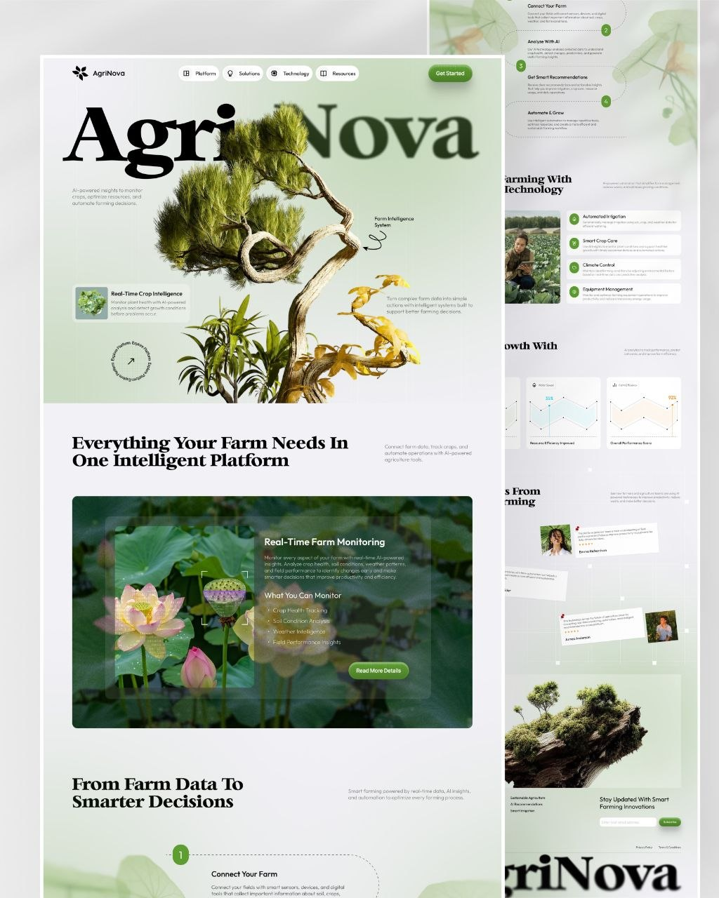

01 — Product & web design
Designed in Figma, properly
Landing pages, brand sites and app UI — with grids, type scales and component libraries behind them, not just pretty pictures.
- UI / UX
- Design systems
- Prototyping
- Art direction
- Handoff